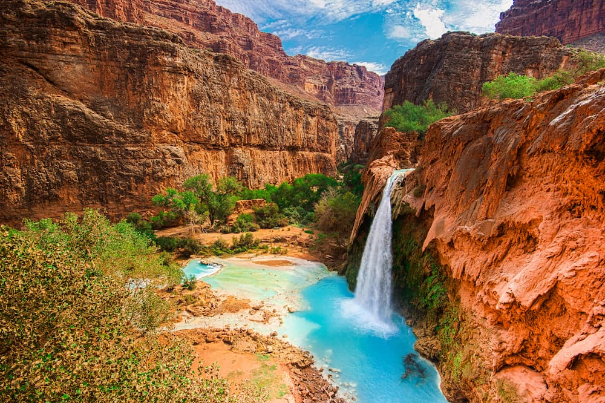

Location
Grand Canyon National Park is in the northwest corner of Arizona. The Colorado River flows through the canyon, comprised from water from seven states, yet the feature we know as Grand Canyon is entirely in Arizona.
Notable Nature
The Park contains several major ecosystems. Its great biological diversity can be attributed to the presence of five of the seven life zones and three of the four desert types in North America. The five life zones represented are the Lower Sonoran, Upper Sonoran, Transition, Canadian, and Hudsonian. This is equivalent to traveling from Mexico to Canada.
Common Misconceptions
- There are no dinosaur bones in the Grand Canyon
- It's not the deepest canyon in the world
- We don't really know how old it is
Common Found Plants
- On the rim at elevations above 7000 feet/2134 m, ponderosa pine is the dominant tree in the forest
- Below 7000 feet/2134 m, pinyon pine and Utah juniper are the dominant trees
- Trees are interspersed with drought-resistant shrubs like cliffrose, fernbush, and serviceberry. Warm, sunny areas along the rim may be home to desert plants like banana yucca and claretcup cactus.
Gallery
One of many watefalls in the Grand Canyon
Visitors look out from a viewpoint

View of the Colorado River from the Upper Rim